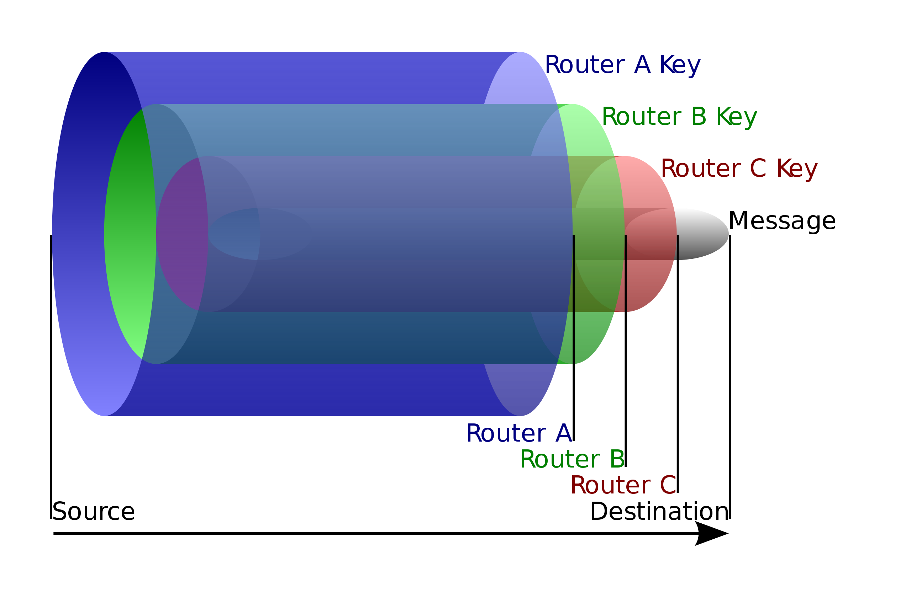
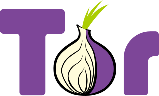
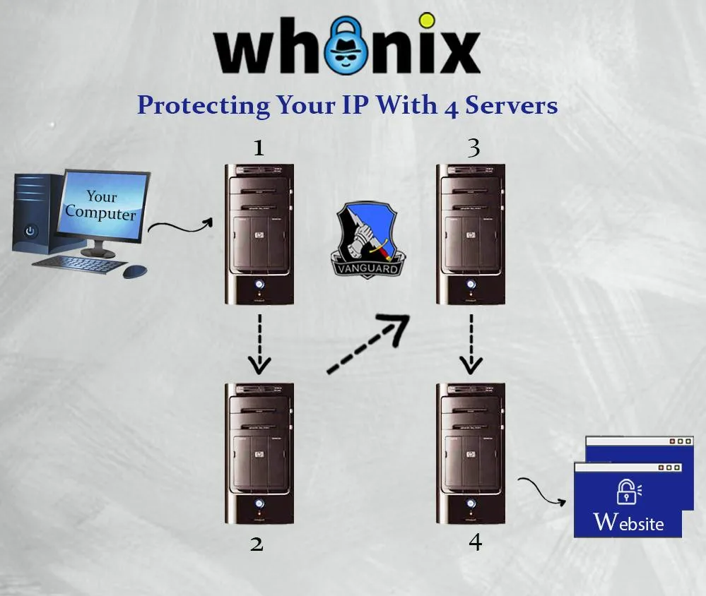

- Whonix uses Tor because it is the best anonymity network available today.
- Multiple server hops. Shared IP addresses. Route randomization. No logs architecture. Anonymity by design. Need to know architecture. Onion-layered encryption. Stream isolation.
- Tor is Open Source, Freedom Software, has partnered with leading research institutions and been subject to intensive academic research.
Introduction
Tor is software providing anonymity on the internet. Thousands of volunteers are running computer servers that keep users anonymous on the Internet. It works by directing the user's internet connection through multiple Tor servers, called Tor relays. The role of each server is to move that data to another server, with the final hop moving data to the end site.
IP Cloaking
On the internet, the user's IP address acts as a globally unique identifier that is commonly used to track all of the user's activity. In simple terms, Tor is an IP cloak. Tor hides the user's IP address.
Tor does that by replacing the user's real IP address with an IP of a Tor exit relay server. When using Tor, websites visited by the user, can only see the IP address of the Tor exit relay. The website can not see the user's real IP address.
Multiple Server Hops

Number of servers between the user and the destination:
Past: In the past, there used to be 3 hops. A chain of 3 servers. In other words, there used to be 3 servers between the user and the destination shielding the user's IP address.Nowadays: Nowadays inside Whonix thanks to vanguards, which is installed by default in Whonix, the number of Tor relays is at least 4.- Update: 3 hops until/if vanguards gets fixed.
Shared IP Addresses
When vising websites using Tor, the Tor exit relay necessarily needs to know the server which the user is connecting to. This is for technical reasons. Otherwise the user could not visit the website. Thanks to Tor's need to know architecture, the Tor exit relay does not know the user's IP address, let alone identity.
Tor exit relays are used by thousands of other users at the same time. Therefore thousands of users are sharing the same IP addresses every day. The advantage of this is, that this improves the anonymity for everybody.
Route Randomization
There are thousands of Tor relays. [1]
When visiting different websites, for better anonymity, Tor uses different routes through the Tor network. In other words, Tor does not always use the same multiple Tor relays.
A route that Tor chooses is called a Tor circuit that is used for a limited time for a limited purpose.
The first two Tor relays in a Tor circuit are called Tor entry guards. The third Tor relay is called the middle relay and the fourth Tor relay is called the Tor exit relay.
Tor entry guards selected by Tor are being kept for longer amounts of time because that is more secure according to anonymity research. See also Tor Entry Guards. The middle relay and exit relay changes more regularity. This makes it harder for snooping spies to track a user.
A Tor circuit is usually used for 10 minutes before Tor automatically changes the Tor circuit. Long running connections that cannot be interrupted (such as the download of a big file or an IRC connection) however are running as long until these are completed.
Tor actually always has multiple different Tor circuits active at the same time. This is related to stream isolation which is elaborated in the next chapter.
No Logs Architecture
The Tor software run by Tor relays has no IP logging feature that could be turned on. [2] Malicious Tor relays would have to add an IP logging feature themselves. Therefore there is no risk for Tor relays to accidentally keep IP logs. The logging features are also designed to sanitize sensitive data in case a user posts them online in bug reports.
Requesting Tor relays to start logging makes limited sense because of route randomization, jurisdictional friction across multiple countries, unenforceability due to the the voluntary and ephemeral nature of participating running Tor relays in the Tor the network as opposed to running it as a business like VPNs/ISPs which can be regulated by laws in many countries.
The fact that The Tor Project is not in any way related to hosting of relays gives it immunity from such legal attacks (Organisational Separation) since their code design is protected under free speech laws and cannot be compelled to add subversive features like logging or backdoors.
Stream Isolation
For better anonymity, when visiting different websites using multiple browser tabs in Tor Browser these are using different, isolated network paths (Tor circuits) through the Tor network. [3] These Tor circuits are isolated from each other. This is called stream isolation. Also connections to different Tor Onion Services are automatically stream isolated. [4]
In Whonix, distinct pre-installed applications are routed through different paths in the Tor network, stream isolated. For example, operating system updates are always isolated from web browsing traffic. These are never sharing the same Tor circuit. This prevents malicious Tor exit relays and other observers [5] from correlating all internet activity from the same user to the same pseudonym.
See also Stream Isolation.
Anonymity Enforcement
The Whonix Project wants to enforce good security by default for our users. That is why a fundamental Whonix design is to force all outgoing traffic through the Tor anonymity network.
After around 20 years of development, Tor has become a large network with good throughput (.onion) and a lot of capacity (.onion).
Virtual Private Networks (VPNs) are usually faster than Tor, but VPNs are not designed for anonymity. VPN administrators can log both where a user is connecting from and the destination website, breaking anonymity in the process. [6] Tor provides anonymity by design rather than policy, making it impossible for a single point in the network to know both the origin and the destination of a connection. Anonymity by design provides a higher standard, since trust is removed from the equation.
When using a VPN, an adversary can break anonymity by monitoring the incoming and outgoing connections of the limited set of servers. On the other hand, the Tor network is formed by over 6000 relays and nearly 2000 bridges (.onion) run worldwide by volunteers. [7] This makes it far more difficult to conduct successful, end-to-end correlation (confirmation) attacks, although not impossible.
Despite Tor's superiority to VPNs, poisoned Tor nodes pose a threat to anonymity. If an adversary runs a malicious Tor entry guard and exit node in a network of 7,000 relays (2,000 entry guards and 1,000 exit nodes), the odds of the Tor circuit crossing both are around one in 2 million. If an adversary can increase their malicious entry and exit relays to comprise 10 percent of the bandwidth, they could deanonymize 1 percent of all Tor circuits. [8]
User Base
Tor has the largest user base of all available anonymity networks. More than 2 million users (.onion) connect to Tor daily. Tor's adoption by a substantial audience proves its maturity, stability and usability. It has also led to rapid development and significant community contributions.
Tor is equally used by journalists, law enforcement, governments, human rights activists, business leaders, militaries, abuse victims and average citizens concerned about online privacy. [9] This diversity actually provides stronger anonymity because it makes it more difficult to identify or target a specific profile of Tor user. Anonymity loves company. [10]
Technical Merits and Recognition
Tor has partnered with leading research institutions and been subject to intensive academic research. It is the anonymity network which benefits from the most auditing and peer review. For example, see Anonymity Bibliography | Selected Papers in Anonymity.
Tor has received awards from institutions like the Electronic Frontier Foundation and the Free Software Foundation, to name a few.
An extract of a Top Secret appraisal by the NSA characterized Tor as "the King of high secure, low latency Internet anonymity" with "no contenders for the throne in waiting". [11]
Need to Know Architecture
The Tor architecture is based on a strict implementation of the need-to-know principle. Each Tor relays in the chain of anonymizing relays has only access to information which are required for its operation. In short:
1. The first Tor relay knows who you are (your IP address), but not where you are connecting to.
2. The second Tor relays knows your Tor entry guards, but doesn't know you.
3. The final Tor relay (also called a Tor exit relay) knows the prior Tor relay of the chain, necessarily needs to know the destination server (such as a website) you're connecting to, but of course has no idea who you are.
The overview below Which Tor relay knows what? and Tor Relay Information Awareness are expressing the same principles in different words and formats with more details.

- Tor Entry guards versus Bridges: For better readability, the overview below mentions only Entry Guard, not Entry Guard / Bridges. Only for the purpose of the following overview, using a Tor Entry Guard is the same as using a Tor Bridge. For more information on Bridges, whether to use them or not, see Bridges.
Which Tor relay knows what?
- Entry Guard
- knows:
- the Tor user's IP/location
- middle relay's IP/location
- doesn't know:
- IP/location of exit relay
- message for middle relay
- message of exit relay
- knows:
- Middle Relay
- knows:
- IP/location of guard
- IP/location of exit relay
- doesn't know:
- Tor user's IP/location
- message for exit's relay
- message for the guard's relay
- knows:
- Exit Relay
- knows:
- IP/location of middle relay
- content of the message from the user
- When not using end-to-end encryption, such as SSL, or if end-to-end
encryption is broken (malicious certificate authority, yes happened):
- For example it knows some things like:
- "Someone wants to know what IP has the DNS name example.com, which is 1.2.3.4."
- "Someone wants to view 1.2.3.4."
- Date and time of transmission.
- When fetching 1.2.3.4: the content of that transmission (how the site looks like).
- A pattern, amount of x traffic send from time y to time z.
- "Login with username: exampleuser and password: examplepassword."
- When using end-to-end encryption:
- For example it knows some things like:
- "Someone wants to know what IP has the DNS name example.com, which is 1.2.3.4."
- "Someone wants to view 1.2.3.4."
- Date and time of transmission.
- When fetching 1.2.3.4: how much traffic has been transmitted.
- A pattern, amount of x traffic send from time y to time z.
- For example it knows some things like:
- When not using end-to-end encryption, such as SSL, or if end-to-end
encryption is broken (malicious certificate authority, yes happened):
- content of the message from the user
- IP/location of middle relay
- doesn't know:
- Tor user's IP/location
- guard's IP/location
- message for the guard's relay
- message for the middle relay
- knows:
Tor Relay Information Awareness
The information available to each of the Tor relay is summarized below.
Category |
Entry Guard |
Middle Relay |
Exit Relay |
|---|---|---|---|
Tor user's IP/location |
Yes |
No |
No |
IP of Entry Guard |
Yes |
Yes |
No |
Message for Entry Guard |
Yes |
No |
No |
IP of Middle Relay |
Yes |
Yes |
Yes |
Message for Middle Relay |
No |
Yes |
No |
IP of Exit Relay |
No |
Yes |
Yes |
Message for Exit Relay |
No |
No |
Yes |
IP of destination server |
No |
No |
Yes |
Message for destination server |
No |
No |
Yes |
The user's Tor client is aware of all information from above categories. This is because by Tor design, the Tor client plans its Tor circuits (paths through the Tor network).
Organisational Separation
There is a clean organisational separation between,
- A) the developers of the Tor software (The Tor Project),
- B) the volunteers running the Tor network,
- C) and the Whonix project.
Onion-Layered Encryption
For the implementation of the Need to Know Architecture Tor uses multiple layers of encryption.
The message and IP address for the destination server (such as for example a website) is wrapped into at least 4 layers of encryption as illustrated in the following diagram.
Figure: Tor Onion Encryption Layers Diagram (license)
1. The communication between the locally running Tor client and the user's machine with the first Tor relay is encrypted.
2. The first Tor relay can only unwrap 1 layer of encryption. The decrypted message includes the IP address of the second relays in the chain and an encrypted message for second relay.
3. The message is passes through the Tor network from the Tor relay chain (as decided by the user's Tor client) until it reaches the last Tor relay, the Tor exit relay.
4. The Tor exit relay received a message that includes the IP address of the destination server as well as a message for the destination server.
5. The actual message for the destination server could be either encrypted or unencrypted. That depends on the application chosen by the user, if:
- Unencrypted: This has in the past been a bigger issue when many websites and applications did not use encryption yet because as mentioned in Warning: Exit Relays can Eavesdrop on Communications if unencrypted.
- Encrypted: In case of an encrypted message, that is called
end-to-end encryption which is very much recommended. Most applications
nowadays are using end-to-end encryption
- For example, when browsing the internet, using end-to-end encryption
is easily done by using http
s. Thesstands for secure. httpsis nowadays standard. Most websites support https. Modern browsers such as Tor Browser have HTTPS-Only Mode enabled by default and would show an ominous warning if httpsis unavailable and would abort connecting to the website. See also, Tor Browser, Encryption. - For other applications (such as Instant Messengers) is is recommended that the user chooses applications which are known to use encryption. Most modern and Freedom Software applications do. In doubt, the user could attempt to look up the application in Documentation.
- For example, when browsing the internet, using end-to-end encryption
is easily done by using http
Location Hidden Servers
TODO: expand
Technical Features
Tor provides:
SocksPorts- and can also provide a
TransPortthat Whonix requires. .oniondomain connectivity, which is required by sdwdate.- Has
/etc/torrc.ddrop-in configuration snippet support. - Compatibility with Tor-friendly applications such as OnionShare, cwtch, Bisq, Ricochet IM, ZeroNet, wahay, Bitcoin Core.
TODO: expand
Relationship between the Tor Project and Whonix
- The Tor [Broken-ExtLink--no-url-was-provided] software is made by The Tor Project.
- The Tor network is run by a worldwide community of volunteers.
- Whonix is a completely separate project developed by a different team.
- Whonix is a complete operating system which uses Tor as its default networking application.
Many people use Tor outside of Whonix. Similarly, a significant number use Whonix for activities other than accessing the Internet through Tor, for example hosting onion services, tunnelling I2P through Tor, tunnelling VPNs or other anonymity networks through Tor, and more.
Further Reading
Footnotes
- Only a subset of them can be used as Tor exit relays.
- https://tor.stackexchange.com/questions/21721/do-relay-and-entry-nodes-keep-logs
- https://gitlab.torproject.org/legacy/trac/-/issues/3455
- https://lists.torproject.org/pipermail/tor-talk/2012-September/025432.html
- Such as the internet service provider (ISP) of the Tor exit relay.
- Promises made by VPN operators are meaningless, since they cannot be verified.
- Admittedly the network has an unknown proportion of malicious relay operators.
- https://arstechnica.com/information-technology/2016/08/building-a-new-tor-that-withstands-next-generation-state-surveillance/
- https://2019.www.torproject.org/about/torusers.html.en
- https://www.freehaven.net/anonbib/cache/usability:weis2006.pdf
- https://boingboing.net/2013/10/04/nsa-and-uk-intel-agency-gchq-t.html
- https://gitlab.torproject.org/legacy/trac/-/wikis/doc/TorFAQ#which-tor-node-knows-what
License
English Wikipedia user HANtwister, CC BY-SA 3.0, via File:Onion_diagram.svg Wikimedia Commons
{kind=link}
Whonix Why does Whonix use Tor wiki page Copyright (C) Amnesia
Whonix Why does Whonix use Tor wiki page Copyright (C) 2012 - 2026 ENCRYPTED SUPPORT LLC <adrelanos(at)whonix.org(Replace(at)with@.)Please DO NOT use e-mail for one of the following reasons:Private Contact: Please avoid e-mail whenever possible. (<a href="Contact.html#Private_Communications_Policy">Private Communications Policy</a>)User Support Questions: No. (See <a href="Support.html">Support</a>.)Leaks Submissions: No. (<a href="Contact.html#No_Leaks_Policy">No Leaks Policy</a>)Sponsored posts: No.Paid links: No.SEO reviews: No.Advertisement deals: No.Default application installation: No. (<a href="Contact.html#Default_Application_Policy">Default Application Policy</a>)>This program comes with ABSOLUTELY NO WARRANTY; for details see the wiki source code.
This is free software, and you are welcome to redistribute it under certain conditions; see the wiki source code for details.